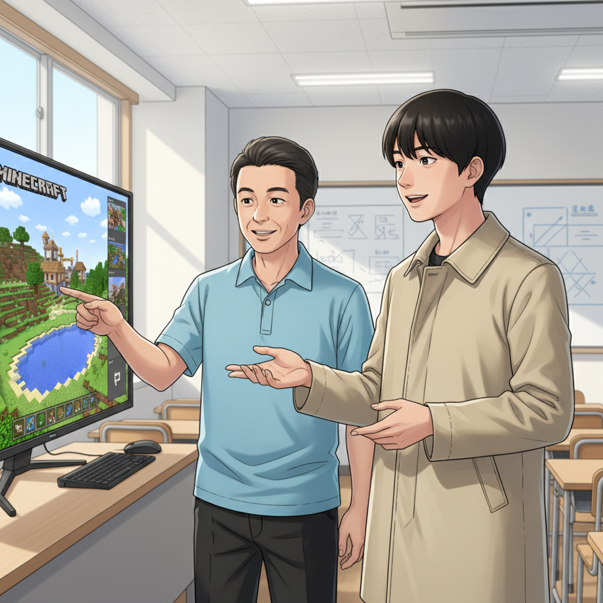
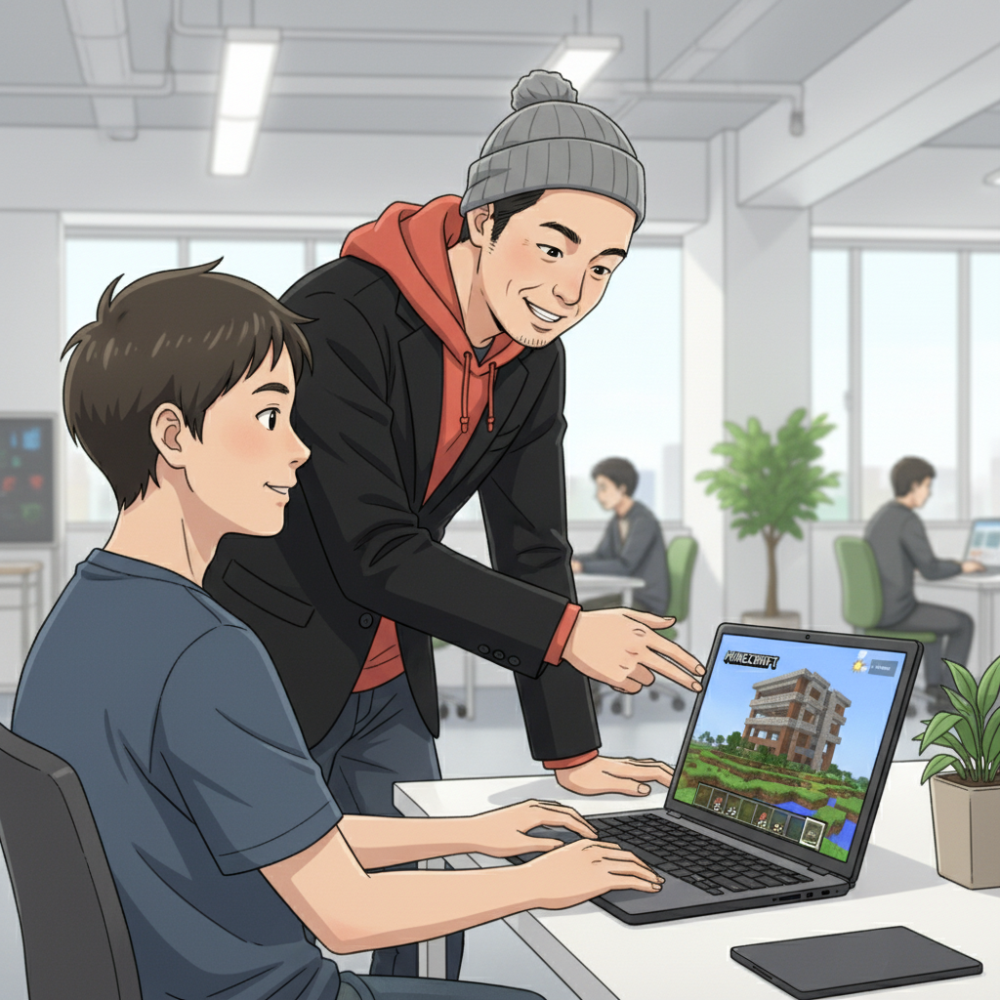
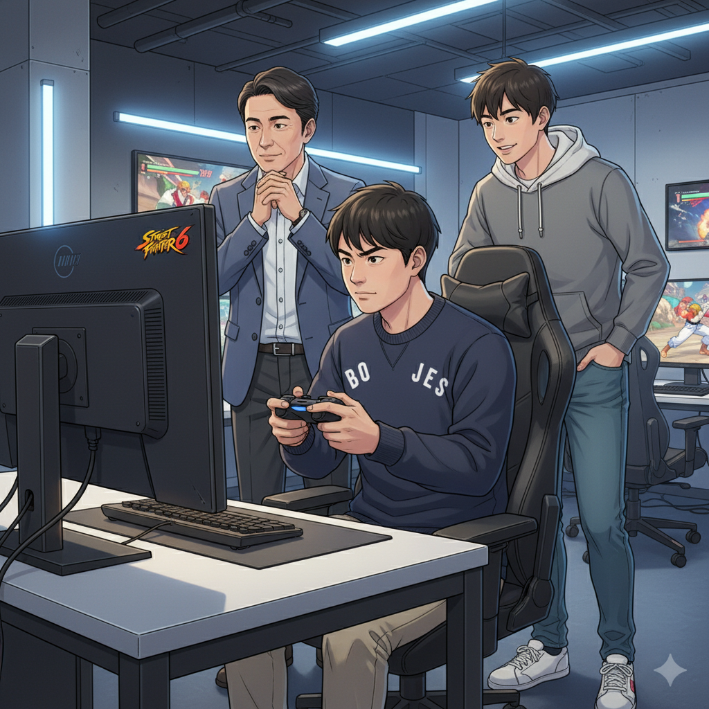
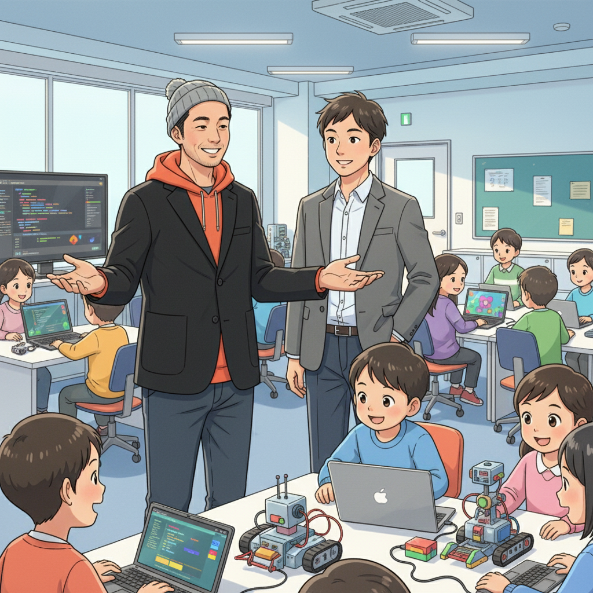

「普通」に馴染めなかった過去と、if塾との出会い（学生起業家）

小さい頃から、周りの人と同じようにするのが苦手でした。授業中にじっとしていられなかったり、興味のないことには全く集中できなかったり…。学校では浮いている存在だったと思います。テストの点数はいつもバラバラ。得意な科目は飛び抜けてできるのに、苦手な科目は壊滅的。まるで、ストリートファイター6のキャラクターみたいに、得意なことと苦手なことがハッキリ分かれていました。
そんな僕がif塾に出会ったのは、高校生の時。塾頭との出会いが、僕の人生を大きく変えることになります。「君のその凸凹こそが、才能の証だよ」って言われた時は、本当に驚きました。初めて自分の特性を肯定してもらえた気がしたんです。
if塾では、自分の好きなこと、得意なことに没頭できる環境がありました。僕はもともとゲームが好きで、特にMinecraftで複雑なコマンドを組むのが得意だったんです。if塾でそのスキルを活かせる機会を与えてもらい、自信を持つことができました。
Minecraftコマンド職人から学生起業家へ（塾頭、学生起業家）

（塾頭）初めて学生起業家と会った時、彼のMinecraftのスキルに圧倒されました。複雑なコマンドを自由自在に操り、まるでプログラムを書いているようでした。発達特性を持つ子は、特定の分野に並外れた集中力を発揮することがあります。彼の才能を活かせる道はないかと考え、起業を提案しました。
（学生起業家）最初は不安もありましたが、塾頭のサポートと、if塾の仲間たちの応援のおかげで、一歩踏み出すことができました。個人事業主として登録し、Minecraftのコマンド制作代行サービスを始めたんです。最初は小さな依頼ばかりでしたが、徐々に口コミで広がり、企業からの依頼も来るようになりました。
自分の得意なことで誰かの役に立てるって、本当に嬉しいことなんです。Minecraftコマンドの知識が、まさかビジネスになるとは、夢にも思いませんでした。
eスポーツとの出会いと、集中力の開花（塾長、学生起業家）

（塾長）if塾には、eスポーツに打ち込んでいるY君というメンバーがいます。彼はストリートファイター6が大好きで、毎日練習に励んでいます。Y君も発達特性を持っており、集中力にムラがあることが悩みでした。しかし、スト6に出会ってから、驚くほど集中力が持続するようになったんです。
（学生起業家）Y君のスト6のプレイを見ていると、彼の集中力に圧倒されます。まるで、ゲームの世界に入り込んでいるかのようです。僕もY君に触発されて、スト6を始めてみました。最初は全然勝てませんでしたが、徐々に上達していくのが楽しくて、気がついたら何時間もプレイしていました。
eスポーツは、発達特性を持つ子どもたちにとって、集中力を高めたり、自己肯定感を高めたりする良いきっかけになるかもしれません。Y君のように、才能を開花させる子どもたちがもっと増えてほしいです。
凸凹を才能に変える！if塾が目指す未来（塾頭、学生起業家）

（塾頭）if塾では、発達特性を「障害」ではなく「才能」だと考えています。子どもたちの「好き」を伸ばし、小さな成功体験を積み重ねることで、自信を持って未来を切り開いていけるようにサポートしています。
（学生起業家）僕はif塾に出会って、人生が大きく変わりました。自分の特性を活かして、起業するという道を見つけることができたからです。もし、あなたが今、自分に自信が持てなかったり、周りの人と同じようにできないことに悩んでいるなら、ぜひif塾に来てみてください。きっと、あなただけの才能が見つかるはずです。そして、その才能を活かして、自分らしいキャリアを築いていってください。発達障害と一言で片付けずに、自分の個性を理解し、受け入れることが大切だと思います。
if塾は、あなたの可能性を信じています。
🎯 興味を持っていただいた方へ
if塾では、発達特性を持つ子どもたちの「好き」を「才能」に変える教育を行っています。現在の記事内容と実際の活動に大きなズレはありませんが、詳細については直接お問い合わせください。
📌 記事について
この記事は、塾頭による完全自動化への挑戦としてAIが自動生成しています。将来的には塾頭が執筆しているような記事になることを目指しており、現時点では事実と異なる内容が含まれる可能性があります。最新の正確な情報については、お問い合わせフォームよりご確認ください。
🤖 Generated with AI - if塾のブログ自動化プロジェクト